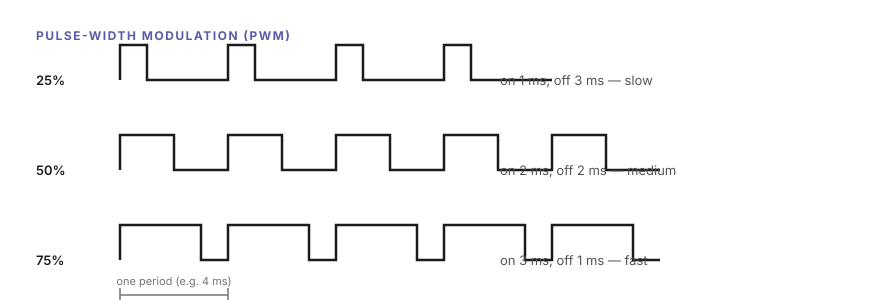
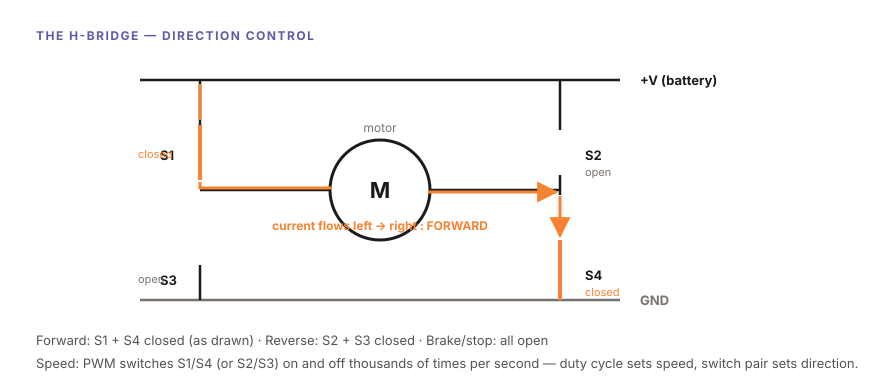
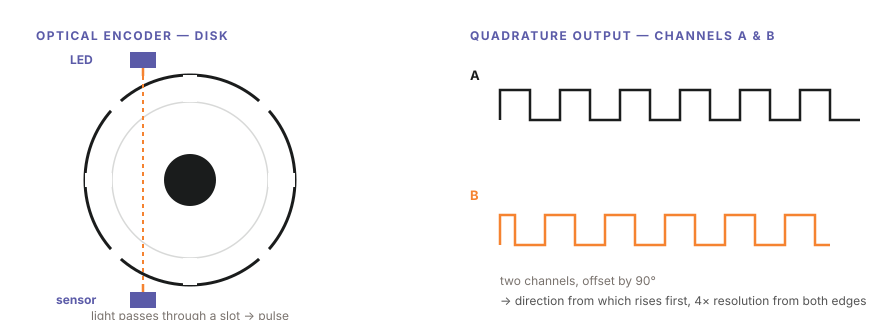
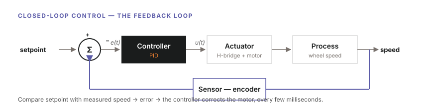
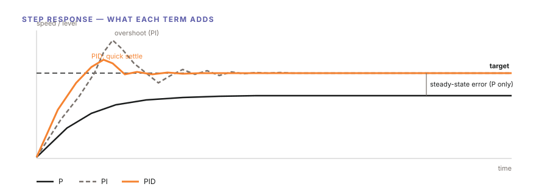

Lab 1 — Motor & Motion: Making Movement Reliable (Student Guide)
Adapted from AIoScout curriculum material and HKUST ISDN 2601 lecture notes (Robot Sensing; PID Controller) for secondary school students.
Lab focus — drive the motors, measure motion with encoders, and close the loop with PID control until the car holds a straight line on its own.
1. Overview and Learning Outcomes
This laboratory covers the car's first motion, and then its accurate control. By the end you can:
- Explain how a DC motor converts voltage into rotation, and how PWM sets the speed
- Use an H-bridge to control direction
- Read a wheel encoder and convert pulses into distance and speed
- Explain open-loop versus closed-loop control, and the role of feedback
- Build and tune a PID controller that holds both wheels at the same speed
Key words: motor · PWM · duty cycle · H-bridge · encoder · quadrature · counts per revolution · feedback · error · P, I, D · steady-state error · overshoot · tuning
2. Background — From Voltage to Reliable Motion
2.1 The DC Motor
A DC motor operates directly: apply a DC voltage and the shaft rotates; remove the voltage and it stops. Internally, current flowing through a coil in a magnetic field produces a force that spins the shaft; a higher voltage produces a faster rotation. The two engineering problems are how fast (speed control) and which way (direction control).
2.2 Speed Control by PWM
A motor cannot be supplied a clean "half voltage", but it can be supplied full voltage half the time. Pulse-Width Modulation (PWM) switches the motor on and off thousands of times per second; the fraction of time it stays on — the duty cycle — sets the average power, and therefore the speed:

Same voltage, different ON-time: 25%, 50%, 75% duty → slow, medium, fast2.3 Direction Control: the H-Bridge
Reversing a DC motor requires reversing the current through it. An H-bridge is four electronic switches arranged around the motor (drawn in the shape of the letter H):
- Close S1 + S4 → current flows left-to-right → forward
- Close S2 + S3 → current flows right-to-left → reverse
- All open → stop (or brake)

Forward state drawn: S1 and S4 closed, current (orange) flows through the motorCombining the two ideas: the switch pair sets direction, and PWM on the pair sets speed. This is precisely the function of the motor driver chip on the car.
2.4 Measuring Motion: the Encoder
A motor has no awareness of how far it has turned; an encoder provides that measurement. In the analogy used in the lectures, encoders provide the robot's proprioception: the sense by which the body knows the position of its limbs without looking.
An optical encoder has three parts:
- A light source (an LED, its beam made parallel by a lens)
- An opaque code disk on the shaft with slots around its rim
- A photosensor (photodiode or phototransistor) that detects the light
As the wheel turns, the disk chops the light beam into pulses — counting the pulses yields the rotation:

Left: LED, slotted disk, and sensor. Right: channels A and B offset by 90°Quadrature. Quality encoders output two signals, A and B, offset by a quarter cycle (90°). This provides two benefits:
- Direction — if A rises before B, the wheel turns one way; if B rises first, the other way
- 4× the resolution — counting the rising and falling edges of both channels gives four counts per slot
Resolution. For a disk with N slots, one count is 360/N degrees. Counting both edges makes it 360/2N, and full quadrature makes it 360/4N. Absolute encoders (which read position directly from a coded disk, for example in Gray code, where only one bit changes per step so that a misread cannot jump far) achieve 360/2ⁿ with n tracks — more accurate, but more expensive. This car uses incremental quadrature encoders.
From counts to distance. The encoder gives counts; kinematics converts them:
revolutions = counts / CPR (CPR = counts per revolution, after quadrature)
distance = revolutions × wheel circumference
speed = distance / elapsed timeExample: a 65 mm wheel (circumference ≈ 204 mm) with CPR = 360: 720 counts = 2 revolutions = 408 mm travelled.
2.5 Open Loop versus Closed Loop
Sending the same PWM to both motors makes the car curve. No two motors are identical — different friction, different windings — so "50% duty" never produces exactly the same speed twice. This is open-loop control: input → process → output, with no measurement and no correction. It is equivalent to walking with closed eyes.
Closed-loop control adds feedback: measure the output, compare it with the target, and correct the difference. In the cruise-control example from the lecture: without feedback, the car slows on every uphill; with a speed sensor feeding back, the controller adds power as soon as the speed drops.

The feedback loop: sensor (encoder) → error → controller (PID) → actuator (H-bridge + motor) → wheel speedEvery control system has the same four parts — in an air conditioner, the process is room temperature and the actuator is the compressor; in this car, the process is wheel speed and the actuator is the H-bridge and motor.
2.6 PID: the Classic Controller
In 1936, Callender and Stevenson patented the combination that still runs over 90% of industrial controllers today: Proportional-Integral-Derivative. The controller output is:
$$ u(t) = K_p\left[\, e(t) + \frac{1}{T_i}\int_0^t e(\tau)\,d\tau + T_d \frac{de(t)}{dt} \,\right] $$
where e(t) is the error (target − measured), and the three terms each play a distinct role. The lectures explain them with a leaking water tank: the water should be held at level A, but it keeps draining toward level B:
P — Proportional: react to the present.
The tap opens in proportion to how far the level is below target: a large difference produces a large correction. With a leak, however, a proportional-only controller settles where its correction exactly balances the leak — below the target, permanently. That residual gap is the steady-state error: with P alone, the water stays at 1 dm while the target is 2.
I — Integral: remember the past.
The integral accumulates error over time. As long as the level is below target, the accumulated error grows and the tap opens further, until the steady-state error is eliminated. The cost is overshoot (the accumulated "momentum" pushes past the target) and a slower settle.
D — Derivative: anticipate the future.
The derivative responds to how fast the error is changing — it dampens the correction when the level rises quickly, reducing the overshoot and shortening the settle time. In cruise control: on an uphill the speed derivative is negative → power is added early; on a downhill it is positive → braking is applied early.

What each term adds: P leaves a steady-state error; I removes it at the cost of overshoot; D calms the responseThe control loop in pseudocode (run every few milliseconds):
take a new measurement (encoder speed)
error = target − measured
integral = integral + error × dt (sum of all past errors)
derivative = (error − lastError) / dt (rate of change)
output = Kp×error + Ki×integral + Kd×derivative
lastError = error
drive the motor with output3. Task 1 — First Motion (Open Loop)
Step 1. Set up the car as in previous labs (battery, board settings, port).
Step 2. Open Task_1.ino and locate the motor commands — set both wheels to the same PWM value (e.g. 1000) and upload.
Step 3. Place the car on the floor (or hold it above the table with the wheels free) and let it run 2 metres. Mark where it stops.
Step 4. Repeat three times from the same start line.
Observation to record: with identical commands, does the car run straight? How far from the straight line does it drift, and does it end in the same place in every run?
Show the TA / instructor: the car moving under open loop, and the three drift measurements. Explain why identical commands do not produce identical motion.
4. Task 2 — Reading the Encoders
Step 1. Open Task_2.ino. The encoder channel A pins are wired to interrupt-capable GPIOs; the skeleton attaches an interrupt service routine that counts pulses:
volatile long countL = 0, countR = 0;
void IRAM_ATTR isrEncoderLeft() { countL++; } // +1 per edge, channel A
void IRAM_ATTR isrEncoderRight() { countR++; }
void setup() {
Serial.begin(115200);
attachInterrupt(digitalPinToInterrupt(ENC_L_A), isrEncoderLeft, RISING);
attachInterrupt(digitalPinToInterrupt(ENC_R_A), isrEncoderRight, RISING);
}Step 2. Upload, open the Serial Monitor, and spin the wheels by hand — observe the counts increase.
Step 3. Push the car exactly 1 metre along a tape measure in a straight line. Record the counts for each wheel.
Step 4. Compute the conversion factor — counts per metre:
counts_per_metre = counts / 1.00 mand compare it with theory: counts_per_metre = CPR / wheel_circumference. (The instructor provides the CPR and wheel diameter for the car.)
Step 5. Add speed measurement: every dt = 100 ms, read the counts, compute how far the wheel travelled, and print the speed in m/s:
float distance = (countL - lastCountL) / (float)CPR * WHEEL_CIRC; // metres this interval
float speed = distance / dt; // m/sShow the TA: hand-spun counts, the measured counts-per-metre versus the theoretical value, and live speed readouts while pushing the car.
5. Task 3 — Closing the Loop: P, I, D
This task is the core of the lab. Task_3.ino runs a control loop every 10 ms: read both encoders, compute each wheel's speed, compare with the target, and write the PWM.
Step 1 — P only. Set Ki = 0, Kd = 0, Kp = 1.0. Command a target speed to both wheels.
float Kp = 1.0, Ki = 0.0, Kd = 0.0;
void controlLoop(float target) {
float measured = readSpeedLeft(); // m/s, from Task 2
float error = target - measured;
integral += error * dt;
float deriv = (error - lastError) / dt;
float u = Kp*error + Ki*integral + Kd*deriv;
lastError = error;
motorLeftWrite(constrain(u, 0, MAX_PWM)); // clamp to valid PWM range
}Record what happens: does the wheel reach the target speed? Observe the printed speed settle below the target — friction and load play the role of the leaking tank, and the residual gap is the steady-state error.
Step 2 — Add I. Set Ki = 0.05. Observe the steady-state error shrink to zero, then note the overshoot during the approach.
Step 3 — Add D. Set Kd = 1.0. Observe the overshoot shrink and the speed settle faster.
Step 4 — Tune it (the trial-and-error procedure from the lecture):
- Disable I and D; adjust P until the response is nearly stable — start at 1.0, adjust by ±0.5, fine-tune by ±0.1
- Enable I until the steady state matches the setpoint — start at 0.05, adjust by ±0.01, fine-tune by ±0.005
- Enable D until the oscillation is reduced to a satisfactory level — start at 1.0, adjust by ±0.5, fine-tune by ±0.1
Change one constant at a time, and record each setting together with the observed behaviour — this log constitutes the tuning evidence.
Show the TA: the same target speed on both wheels with the tuned constants — and the tuning log with at least three tested settings.
6. Task 4 — The Straight-Line Test (Milestone)
Step 1. With the tuned PID controlling both wheels to the same target speed, place the car on a 2-metre start line.
Step 2. Run the car three times.
Step 3. Measure the lateral deviation from the straight line at the 2 m mark for each run.
Success criteria: deviation under 5 cm, reproducible across three runs.
Compare with the Task 1 measurements: the same car and the same motors, but the feedback loop now corrects every difference between the wheels dozens of times per second.
Show the TA: three straight-line runs and the deviation table. This is the Part 1 milestone — The Perfectly Straight Line.
7. Appendix
7.1 Why the car turns: differential drive
Two driven wheels, one castor. The car's speed and turn rate follow directly from the wheel speeds:
v = (vL + vR) / 2 (forward speed)
ω = (vR − vL) / W (turn rate; W = distance between wheels)Equal speeds → straight. A small difference → a gentle arc. Opposite speeds → a pivot on the spot. The PID loop holding vL = vR is what produces straight-line motion.
7.2 Encoder characteristics
- Missed counts: if the interrupt fires faster than the MCU can service it, counts are lost — one reason to keep control loops lean
- Gray code: absolute encoder disks use Gray code so that only one bit changes per step — a misread then moves the position by one step instead of to a completely wrong angle (the binary-code problem from the lecture)
- Error sources: quantization, disk eccentricity, printing tolerances, vibration — the reason the measured counts-per-metre differs slightly from the theoretical value
7.3 Troubleshooting
| Symptom | Likely cause |
|---|---|
| One wheel never moves | Motor connector or H-bridge wiring — swap left/right connectors to isolate |
| Counts do not change | Encoder power or signal pin; check that attachInterrupt used an interrupt-capable pin |
| Counts jitter while still | Ambient light or a loose sensor — shade the disk; check the wiring |
| Speed oscillates wildly | Kp too high — halve it, then re-tune in order P → I → D |
| Never reaches target | Ki too small, or the target speed exceeds what the motor can deliver at full PWM |